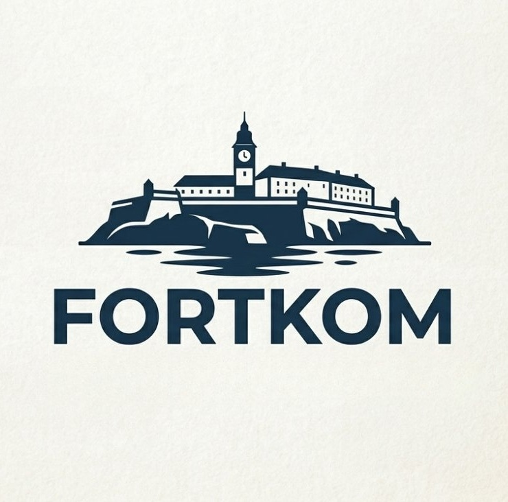

We're here to help - fast, friendly, and always focused on your needs.
We're not a typical eCommerce support team - and we're not trying to be. Fortkom was built by a group of seven specialists who understand a few things better than most: operations break, customers get frustrated, and revenue gets lost in the gaps. That's where we step in.
We operate like a fortress behind your business - protecting your revenue, stabilizing your operations, and making sure nothing slips through the cracks.
We don't just respond to problems - we build systems that prevent them.
We move fast, adapt faster, and think as a unit. Because we're a team - not a single mind - every challenge is approached from multiple angles. That means better decisions, faster execution, and fewer blind spots.
We specialize in complex, high-friction industries, and we try to find the most efficient SOP in order for everything to run smoothly.
In industries where:
▸ Fitment issues are common
▸ Returns are frequent
▸ Customers need precise, fast answers
This is where most operations struggle.
This is where
we perform best.
While most teams focus on tickets, we focus on outcomes.
We don't plug into your business - we reinforce it.
Unlike typical support teams that treat your operations as a black box, we take the time to understand your systems, your challenges, and your goals. We don't just handle volume - we optimize it. We don't just answer questions - we reduce them. We don't just fix problems - we eliminate the conditions that create them.
If your operations feel chaotic, your support is overwhelmed, or your revenue is leaking - you don't need more agents.
You need structure. You need
strategy. You need a system.
You need Fortkom.